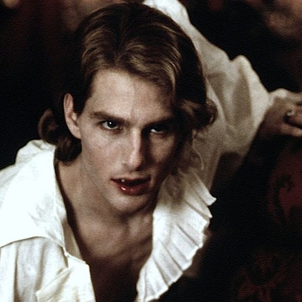
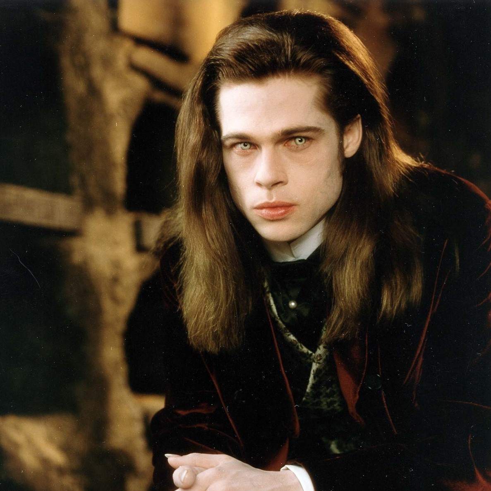
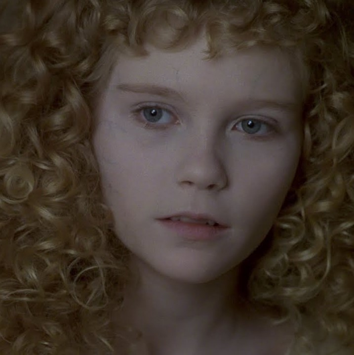

Sobre
Entrevista com o Vampiro é um livro de terror gótico escrito pela romancista estadunidense Anne Rice. Sua primeira edição foi publicada nos Estados Unidos em 1976 e foi a primeira obra de sucesso da autora. Escrito em estilo de crônica, Entrevista com o Vampiro centra no personagem Louis de Pointe du Lac, que conta a história de sua vida para um repórter. Rice compôs o romance logo após a morte de sua filha Michelle, que serviu de inspiração para a personagem Claudia.
Um vampiro chamado Louis de Pointe du Lac conta a história de sua vida de 200 anos a um repórter conhecido simplesmente como "o rapaz". Em 1791, Louis é um jovem proprietário de uma plantação de índigo na Luisiana. Atormentado pela morte de seu irmão, ele busca a morte de todas as formas possíveis. Louis é abordado por um vampiro chamado Lestat de Lioncourt, que desejava a companhia de Louis. Lestat transforma Louis em um vampiro e os dois se tornam companheiros imortais. Lestat passa o tempo se alimentando de escravos enquanto Louis, que acha moralmente repugnante matar humanos para sobreviver, se alimenta de animais. Louis e Lestat são forçados a partir quando os escravos de Louis começam a temer os monstros com os quais viviam e instigam uma revolta. Louis incendeia sua própria plantação; ele e Lestat matam os escravos para evitar que se espalhe a notícia sobre os vampiros que vivem na Luisiana.
Crônicas vampirescas: Conheça em ordem os livros da saga
- Entrevista com o Vampiro (1976)
- O Vampiro Lestat (1985)
- A Rainha dos Condenados (1988)
- O Ladrão de Corpos (1992)
- Memnoch (1995)
- Vampiro Armand (1998)
- Merrick (2000 - crossover Crônicas Vampirescas + As Bruxas Mayfair)
- Sangue e Ouro (2001)
- A Fazenda Blackwood (2002 - crossover Crônicas Vampirescas + As Bruxas Mayfair)
- Cântico de Sangue (2003 - crossover Crônicas Vampirescas + As Bruxas Mayfair)
- O Príncipe Lestat (2014)
- O Príncipe Lestat e o Reino de Atlantis (2017)
- Blood Communion: A Tale of Prince Lestat (2018)
Conheça os atores e atrizes que participaram do filme.
- Tom cruise - Lestat de Lioncourt
- Brad pitt - Louis de Pointe Du Lac
- Kirsten Dunst - Claudia
- Christian Slater - Daniel Molloy
- Antonio Banderas - Armand
- Thandiwe Newton - Yvette
- Stephen Rea - Santiago
- Indra Ové - Prostituta de New Orleans
- Domiziana Giordano - Madeleine
- Helen McCrory - Prostituta
- Sara Stockbridge - Estelle
Protagonistas

Lestat de Lioncourt
Imagem do Vampiro Lestat interpretado por Tom Cruise no filme "Entrevista com o vampiro".

Louis de Pointe du Lac
Imagem do Vampiro Louis du Lac interpretado por Brad pitt no filme "Entrevista com o vampiro".

Claudia
Imagem da Vampira Claudia interpretada por Kirsten Dunst no filme "Entrevista com o vampiro".